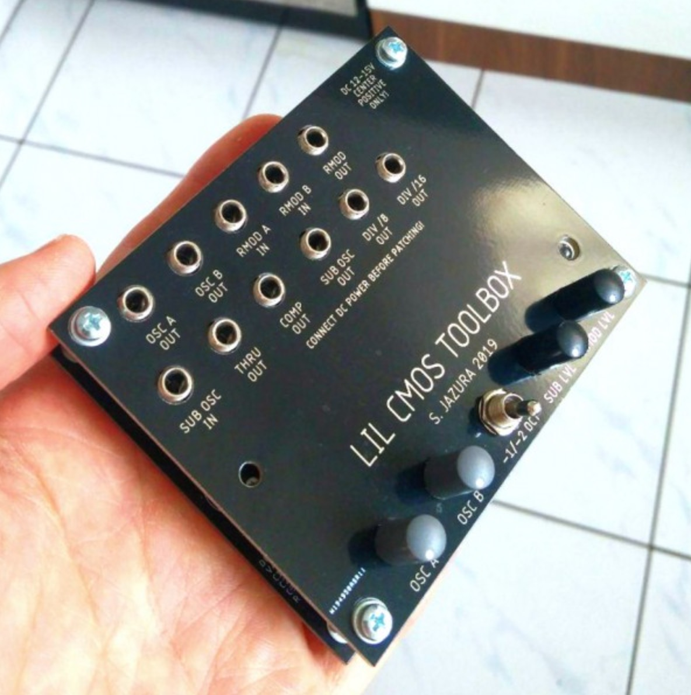

CMOS-based semi-modular synthesizer.

The idea started as an expander for the Behringer Neutron. I always felt that the Neutron is lacking some kind of modulation for the oscillator section. So the Toolbox provides a ring-modulator (quite similar to the one in the Korg MS-20) and a sub-oscillator, to fulfill my needs. Here is a list of the features: - Ring-modulator - Sub-oscillator (-1/-2 Octave) - Clock divider - 2 oscillators (square) - Comparator - Buffer
All DB data
- Name: Lil CMOS toolbox
- Author: Planeteatrr
- Link: https://github.com/diysynth/STANDALONE-DEVICES
- Demo: https://www.youtube.com/watch?v=F06fM2n9Yoc
- Picture: ../pics/lil-cmos-toolbox.jpg
- Description: CMOS-based semi-modular synthesizer.
- Notes: The idea started as an expander for the Behringer Neutron. I always felt that the Neutron is lacking some kind of modulation for the oscillator section. So the Toolbox provides a ring-modulator (quite similar to the one in the Korg MS-20) and a sub-oscillator, to fulfill my needs. Here is a list of the features: - Ring-modulator - Sub-oscillator (-1/-2 Octave) - Clock divider - 2 oscillators (square) - Comparator - Buffer
- Artifacts: {“Schematic”=>true}{“PCB”=>false}{“BOM”=>true}{“FW”=>false}{“Docs”=>false}{“Enclosure”=>true}
- Tags: AnalogModular
- Level: Advanced
{kind=link}